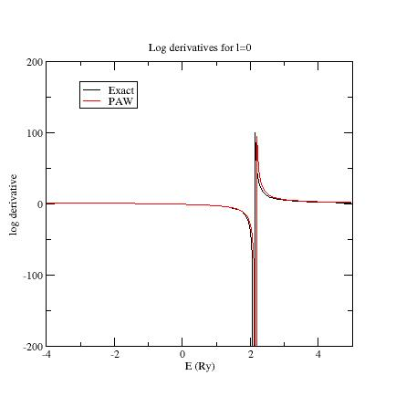
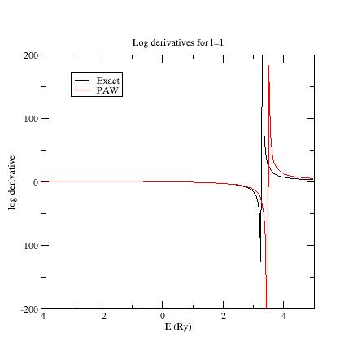
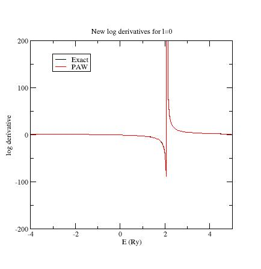
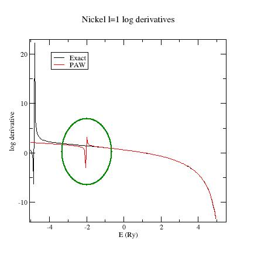

ABINIT tutorial. Second lesson on the projector-augmented wave (PAW) technique :
The generation of atomic data.
This lesson aims at showing how to compute atomic
data files for the
projector-augmented-wave method.
You will learn how to generate the atomic data and
what the main
variables are to govern their softness and transferability.
It is supposed you already know how to use ABINIT
in the
PAW case
This lesson should take about 1h30.
Copyright (C) 2000-2017 ABINIT group (MT)
Second lesson on the projector-augmented wave (PAW) technique table of content:
- 1. The PAW
atomic dataset - introduction
- 2.
Use of the generation code
- 3.
First (and basic) PAW
dataset for Nickel
- 4.
Checking
the sensitivity of results to some parameters
- 5. Adjusting partial
waves and projectors
- 6.
Examine the logarithmic derivatives
- 7. Testing efficiency of
PAW dataset
- 8.Calculate physical quantities
- 9. The Real Space Optimization (RSO) -
experienced users
1. The PAW atomic dataset - introduction
The PAW method is based on the definition of
atomic spheres (augmentation regions) of radius rPAW
around the
atoms of the system in which a base of atomic partial waves φi,
of
"pseudized" partial waves~φi,
and of projectors~pi
(dual to~φi)
have to be
defined. This set of partial-waves and projectors functions plus some
additional atomic data are stored in a so-called PAW dataset.
A
PAW dataset has to be generated for each atomic species in order to
reproduce atomic behavior as accurate
as possible while requiring minimal CPU and memory resources in
executing ABINIT for the crystal simulations. These two
constraints are conflicting.
The PAW dataset generation is
the purpose of this tutorial.
It is done according
the following procedure (all
parameters that define a PAW dataset are in bold):
Choose
and define the concerned
chemical
species (name and atomic number).
Solve the
atomic all-electrons problem in a given atomic configuration. The
atomic problem is solved within the DFT formalism, using an exchange-correlation
functional and either a Schrödinger (default) or scalar-relativistic
approximation. It is a spherical problem and it is solved
on
a radial grid. The
atomic
problem is solved for a given electronic
configuration that can be an ionized/excited one.
Choose a set
of electrons that will be considered as frozen around the nucleus (core
electrons). The others electrons are valence ones and will
be
used in the PAW basis. The core
density is then
deduced from the core electrons wave functions. A smooth core
density equal to the core density outside a given rcore
matching radius
is computed.
Choose
the size of the PAW basis
(number of partial-waves and projectors). Then choose the partial-waves
included in the basis. The later can be atomic eigen-functions
related to valence electrons (bound states) and/or additional
atomic functions, solution of the wave equation for a
given l
quantum number at arbitrary reference
energies (unbound states).
Generate
pseudo partial-waves
(smooth partial-waves build with a pseudization
scheme
and equal to partial-waves outside a given rc
matching radius) and associated projector
functions. Pseudo partial-waves are solutions of the PAW
Hamiltonian deduced from the atomic Hamiltonian by pseudizing the
effective potential (a local pseudopotential
is
built and equal to effective potential outside a rvloc
matching radius). Projectors and partial-waves are then
orthogonalized with a chosen orthogonalization
scheme.
Build a compensation
charge density used later in order to retrieve the total
charge of the atom. This compensation charge density is located inside
the PAW spheres and based on an analytical shape function
(which analytic form and localization
radius rshape
can be chosen).
The user can choose
between two PAW
dataset generators to produce atomic files directly readable by ABINIT.
The
first one is the PAW generator ATOMPAW
(originally by N. Holzwarth) and the second one is the
Ultra-Soft
(US)
generator (originally written by
D. Vanderbilt).
In this tutorial, we concentrate only on ATOMPAW.
It is highly recommended to refer to the following papers to
understand correctly the generation of PAW atomic datasets:
[1] "Projector augmented-wave method, P.E. Blochl, Phys. Rev. B 50,
17953 (1994)
[2]
"A projector Augmented Wave (PAW) code for electronic structure
calculations, Part I : atompaw
for generating atom-centered functions", N. Holzwarth et al.,
Computer Physics Communications, 329 (2001) (might also be available at http://www.wfu.edu/%7Enatalie/papers/pwpaw/atompaw.pdf)
[3] "From ultrasoft pseudopotentials to
the projector augmented-wave method", G. Kresse, D. Joubert, Phys. Rev. B 59, 1758 (1999)
[4]
"Electronic structure packages: two implementations of the Projector
Augmented-Wave (PAW) formalism", M. Torrent et al., Computer Physics
Communications 181, 1862 (2010) (might also be available at http://www.wfu.edu/%7Enatalie/papers/PAWform/PAWformman.sdarticle.pdf)
[5]
"Notes for revised form of atompaw code", by N. Holzwarth, available at http://www.wfu.edu/%7Enatalie/papers/pwpaw/notes/atompaw/atompawEqns.pdf
2. Use of the generation code
Before continuing, you might
consider to work in a different
subdirectory as for the other lessons. Why not "Work_paw2" ?
Provided that ABINIT has been compiled with the "--with-dft-flavor="...+atompaw"" option,
the ATOMPAW code is
directly available from command line.
First, just try to type: atompaw
if "atompaw vx.y.z" message appears,
everything is fine.
Otherwise, you can try "~abinit_compilation_directory/fallbacks/exports/bin/atompaw-abinit"
In any case, in the following, we name atompaw
the ATOMPAW executable.
How to use
Atompaw ?
- Edit
an input file in a text editor (content of input explained here)
Partial
waves φ
i, PS partial waves
~φ
i
and projectors
~p
i
are
given in
wfn.i
files.
Logarithmic
derivatives from atomic Hamiltonian
and PAW Hamiltonian resolutions are given in
logderiv.l
files.
A summary of the atomic all-electrons computation
and PAW dataset properties can be found in the
Atom_name
file
(Atom_name is the first parameter of the input file).
Resulting
PAW dataset is contained in:
Atom_name.XCfunc-paw.abinit file
(specific format for ABINIT;
present only if requested in inputfile)
Atom_name.atomicdata file
(specific format for PWPAW
code)
3. First (and basic) PAW dataset for Nickel
Our test case
will be NICKEL
(1s2
2s2 2p6
3s2 3p6 3d8 4s2
4p0).
In
a first stage, copy a simple input file for ATOMPAW in your working
directory (find it in ~abinit/doc/tutorial/lesson_paw2/Ni.atompaw.input1).
Edit this file.
This file has been built in the following
way:
1-All-electrons
calculation:
-
First line: define the material
in the first line
- Second line:
choose the exchange-correlation
functional (LDA-PW
or GGA-PBE)
and select a scalar-relativistic
wave equation (nonrelativistic
or scalarrelativistic)
and a (2000
points) logarithmic grid.
- Next
lines: define the electronic
configuration:
How many
electronic states do we
need to include in the computation ?
Besides the fully and partially
occupied states, it is recommended to add all states that could be
reached by electrons in the solid. Here, for Nickel, the 4p state
is concerned. So we decide to add it in the computation.
-
A line
with the maximum n
quantum
number for each electronic shell; here "4 4 3" means 4s, 4p, 3d.
-
Definition of occupation numbers:
For
each
partially occupied shell enter the occupation number. An excited
configuration may be useful if the PAW dataset is intended for use in a
context where the material is charged (such as oxides). Although, in
our experience, the results are not highly dependent on the chosen
electronic configuration.
We choose here the 3d8 4s2
4p0 configuration.
Only 3d
and 4p
shells are partially occupied ("3
2 8" " and "4 1 0" lines). A "0 0 0" ends the occupation section.
-
Selection
of
core and valence
electrons
selection: in a first approach, select only electrons from outer
shells as valence. But, if particular thermodynamical conditions are
to be
simulated, it is generally needed to include "semi-core
states" in the set of valence electrons. Semi-core states are
generally needed with transition metal and rare-earth materials. Note
that all wave functions designated as valence electrons will
be used in the partial-wave basis.
Core shells are designated
by a "
c"
and valence shells by a "
v".
All
s states
first, then
p states
and finally
d states.
Here:
c
c
c
v
c
c
v
v
means:
1s core
2s core
3s core
4s valence
2p core
3p core
4p valence
3d
valence
Partial-waves basis
generation:
- A line with lmax the maximum l for the partial waves basis.
Here lmax=2.
- A
line with the rPAW
radius. Select it to
be slightly less than half the inter-atomic distance in the solid (as a
first choice). Here rPAW=2.3 a.u. If only
one radius is input, all others pseudization radii will be equal to rPAW
(rc, rcore, rVloc
and rshape).
- Next
lines: add
additional partial-waves φi if
needed: choose to
have 2 partial-waves per
angular momentum in the basis (this choice is
not necessarily optimal but this is the most common one; if rPAW
is
small enough, 1 partial-wave per l
may suffice). As a first guess, put
all reference energies for additional partial-waves to 0 Rydberg.
Note that for each angular
momentum, valence states already are included in the partial waves
basis. Here
4s,
4p
and
3d
states already are in the basis
For each angular momentum,
first add "y" to add an additional partial wave. Then, next line, put
the value in Rydberg units. Repeat this for each new partial
wave and finally put "n"
In the present file,
y
0.5
n
means
that an additional
s-
partial wave at
Eref=0.5
Ry as been added.
y
0.
n
means
that an additional
p-
partial wave at
Eref=0.
Ry has been added.
y
0.
n
means
that an additional
d-
partial wave at
Eref=0.
Ry as been added.
Finally,
partial waves basis contains two
s-,
two
p-
and two
d-
partial waves.
- Next line: definition of
the generation scheme
for pseudo partial waves~φi,
and of projectors~pi.
We begin here with
a simple scheme (i.e. "Bloechl" scheme, proposed by P. Blöchl in
ref.
[1]). This will probably be changed later to make the PAW dataset more
efficient.
- Next line: generation scheme for local pseudopotential Vloc.
In order to get PS partial waves, the atomic potential has to be
"pseudized" using an arbitrary pseudization scheme. We choose here a
"Troullier-Martins" using a
wave equation at lloc=3
and Eloc=0. Ry. As a first
draft, it is always recommended to put lloc=1+lmax
(lmax defined above).
- Next two
lines: a "2" (two) tells ATOMPAW
to generate PAW dataset for ABINIT;
the next line contains options for this ABINIT file. "default" set all
parameters to their default value.
- A
0 (zero) to end the file.
At
this
stage,
run atompaw !
For
this purpose, simply enter: atompaw
<Ni.atompaw.input1
Lot of files are produced. We will examine some of them.
A
summary of the PAW dataset generation process has been written in a
file
named Ni
(name
extracted from first line of input file). Open it. It should look like:
Atom
= Ni Z = 28
Perdew
- Burke - Ernzerhof GGA
Log grid -- n,r0,rmax = 2000 2.2810899E-04 8.0000000E+01
Scalar
relativistic calculation -- point nucleus
all-electron results
core
states (zcore) = 18.0000000000000
1
1 0
2.0000000E+00 -6.0358607E+02
2
2
0 2.0000000E+00 -7.2163318E+01
3 3
0 2.0000000E+00 -8.1627107E+00
5 2
1 6.0000000E+00 -6.2083048E+01
6 3
1 6.0000000E+00 -5.2469208E+00
valence
states (zvale) =
10.0000000000000
4 4
0 2.0000000E+00
-4.1475541E-01
7 4 1
0.0000000E+00
-9.0035738E-02
8 3 2
8.0000000E+00
-6.5223644E-01
evale = -185.182300204924
selfenergy
contribution
= 8.13253645212050
paw parameters:
lmax = 2
rc = 2.30969849741149
irc = 1445
Vloc:
Norm-conserving Troullier-Martins form; l= 3;e= 0.0000E+00
Projector
method: Bloechl
Sinc^2 compensation charge shape zeroed at rc
Number
of basis functions 6
No. n l
Energy
Cp coeff
Occ
1 4 0 -4.1475541E-01
-9.5091493E+00
2.0000000E+00
2 999 0 5.0000000E-01
3.2926940E+00 0.0000000E+00
3 4
1
-9.0035738E-02 -8.9594194E+00 0.0000000E+00
4 999
1 0.0000000E+00 1.0836820E+01
0.0000000E+00
5 3 2 -6.5223644E-01
9.1576176E+00
8.0000000E+00
6 999 2
0.0000000E+00
1.3369075E+01 0.0000000E+00
evale from
matrix elements
-1.85182309373359203E+02
The generated PAW
dataset (contained in Ni.atomicdata, Ni.GGA-PBE-paw.abinit
or Ni.GGA-PBE.xml
file) is a
first draft.
Several parameters have
to be adjusted, in order to get accurate results and efficient DFT
calculations.
Note that only Ni.GGA-PBE-paw.abinit
file is directly usable by ABINIT.
4. Checking the sensitivity of results to some
parameters
Try to select 700 points in the
logarithmic
grid and check if any
noticeable difference in the results appears.
You just have to
replace 2000 by 700 in the second line of Ni.atompaw.input1
file. Then
run atompaw
<Ni.atompaw.input1 again
and look at the Ni
file:
evale = -185.182300567432
evale from matrix
elements
-1.85182301887091256E+02
As you see, results obtained with
this new
grid are very close to previous ones. We can keep the 700 points grid.
You could
decrease
the size of
the grid; by
setting 400 points you should obtain:
evale = -185.182294626845
evale
from matrix elements -1.85182337214119599E+02
Small grids give PAW dataset with small size
(in kB) and
run faster in ABINIT, but
accuracy can be affected.
- Note that the final rPAW value ("rc =
..." in Ni
file) change with the
grid; just because rPAW is adjusted in
order to belong exactly
to the radial grid. By looking in ATOMPAW user's
guide, you
can choose to keep it constant.
- Also note that, if the
results are difficult to
get converged (some error produced by ATOMPAW),
you should try a linear
grid...
Scalar-relativistic
option should give better results than non-relativistic one, but it
sometimes produces difficulties for the convergence of the atomic
problem (either at the all-electrons resolution step or at the PAW
Hamiltonian solution step). If convergence cannot be reached, try a
non-relativistic
calculation (not recommended for high Z materials)
For the following, note that you always should
check the
Ni
file, especially the values of valence energy ("evale"). You can
find the valence energy computed for the exact atomic problem and the
valence energy computed with the PAW parameters ("evale from matrix
elements"). These two results should be in close agreement!
5. Adjusting partial waves and projectors
Examine
the partial-waves, PS partial-waves and projectors.
These are
saved in files named
wfni, where
i ranges over the number of partial
waves used, so 6 in the present example. Each file contains 4 columns: the radius in
column 1, the partial wave φi in column 2,
the PS partial wave~φi in column 3,
and the projector~
pi in column 4. Plot the three curves as a function of radius using a plotting tool of
your choice.
Here is the first s- partial wave
/projector of the Ni example:

The φi
should meet the~φi
near or after the last maximum (or minimum). If not, it is
preferable to change the value of the matching (pseudization) radius.
The maxima of the
~φi
and ~pi functions
should have the same order of magnitude (but need not agree exactly). If not, you can
try to get this in three ways:
-
Change the matching radius for this partial-wave; but this is not
always possible (PAW spheres should not overlap in the solid)...
-
Change the pseudopotential scheme (see later).
- If there are
two
(or more) partial waves for the angular momentum l under
consideration, decreasing
the magnitude of the projector is possible by displacing the
references energies. Moving the energies away from each other
generally reduces the magnitude of the projectors, but too big a
difference between energies can lead to wrong logarithmic derivatives
(see following section).
Example:
plot the wfn6
file, concerning the second d-
partial wave:
This
partial wave has been
generated at Eref=0 Ry and
orthogonalized with the first d-
partial wave which has an eigenenergy equal to -0.65Ry (see Ni file).
These two energies are too close and orthogonalization process produces
"high" partial waves.
Try
to
replace the reference energy for
the additional d-
partial wave. For example, put Eref=1. instead of Eref=0.
(line 24 of Ni.atompaw.input1
file). Run ATOMPAW again and
plot wfn6 file:

Now the
PS partial wave and projector have the same order of magnitude
!
Note
again that you should always check
the evale
values in Ni
file and make sure they are as close as
possible.
If not, choices for projectors and/or partial waves
certainly are not judicious.
6. Examine the logarithmic derivatives
Examine the logarithmic
derivatives, i.e., derivatives of an l-state d(log(ψl(E))/dE computed
for the exact atomic problem and with the PAW dataset.
They are
printed
in the logderiv.l
files. Each logderiv.l
file corresponds to angular momentum quantum number l,
and contains three columns of data: the energy, the logarithmic
derivative of the l-state of the exact atomic problem and
of the pseudized problem.
In our Ni example, l=0, 1
or 2.
The logarithmic derivatives
should have the following properties:
The
2 curves should be superimposed as much as possible. By construction,
they are superimposed at the two energies corresponding to the two l
partial-waves. If the superimposition is not good enough, the reference
energy for the second l
partial-wave should be changed.
Generally
a discontinuity in the logarithmic derivative curve appears at
0<=E0<=4 Rydberg.
A reasonable
choice is to
choose the 2 reference energies so that E0
is in between.
Too close reference energies produce
"hard" projector functions (as previously seen in
section 5). But moving reference
energies away from each other can damage accuracy of logarithmic
derivatives
Here are the three logarithmic derivative curves
for the current dataset:

As
you can see, except for l=2,
exact and PAW logarithmic derivatives do not match !
According
to
the previous remarks, try other values for the references energies of
the s- and
p-
additional partial waves.
First,
edit again the Ni.atompaw.input1
file and put Eref=3Ry for the
additional s-
state (line 18); run
ATOMPAW
again. Plot the logderiv.0
file.
You should get:

Then
put Eref=4Ry
for the second p-
state (line
21); run ATOMPAW again. Plot
again the logderiv.1
file. You should
get:
Now,
all PAW logarithmic derivatives match with the exact ones in a
reasonable interval.
Note: enlarging energy
range of logarithmic derivatives plots
It
is possible to change the interval of energies used to plot logarithmic
derivatives (default is [-5;5]) and also to compute them at more points
(default is 200). Just add the following keywords at the end of the
SECOND LINE of the input file:
logderivrange
-10 10 500
In the above example ATOMPAW plots logarithmic
derivatives for energies in [-10;10] at 500 points.
Additional information
concerning
logarithmic derivatives:
Another
possible problem could be the presence of a discontinuity in the PAW
logarithmic derivative curve at an energy where the exact logarithmic
derivative is continuous.
This generally shows the presence of
a
'ghost state'.
- First,
try to change to value of reference energies; this sometimes
can make the ghost state disappear.
- If not, it can
be useful
to:
*
Change the
pseudopotential scheme. Norm-conserving pseudopotentials are
sometimes so deep (attractive near
r=0)
that they produce ghost states.
A
first solution is to change the
quantum number used to generate the
norm-conserving pseudopotential. But this is generally not sufficient.
A
second solution is to select an "ultrasoft" pseudopotential, freeing
the norm conservation constraint (simply replace "
troulliermartins" by
"
ultrasoft" in input file)
A
third solution is to select a
simple
"bessel"
pseudopotential (replace "
troulliermartins"
by "
bessel" in input file).
But, in that case, one has to
noticeably decrease the matching radius
rVloc
if
one wants to keep reasonable physical results. Selecting a value of
rVloc
between 0.6*
rPAW and 0.8*
rPAW
is
a good choice; but the best way to adjust
rVloc
value is to have a look at the two values of
evale in
Ni file which
are sensitive
to the choice of
rVloc. To change the
value of
rVloc,
one has to detail the line containing all radii (
rPAW,
rshape,
rVloc
and
rcore);
see
user's
guide.
* Change
the matching radius rc for one (or both) l partial-wave(s).
In some
cases, changing rc can remove ghost
states.
- In
most cases (changing pseudopotential or
matching radius), one has to restart the procedure from step 5.
To
see an example of ghost state, use
the ~abinit/doc/tutorial/lesson_paw2/Ni.ghost.atompaw.input
file and run it with
ATOMPAW.
Look
at the l=1 logarithmic
derivatives (logderiv.1
file). They look
like:

Now,
edit the Ni.ghost.atompaw.input
file and replace "troulliermartins"
by "ultrasoft". Run ATOMPAW
again... and look at logderiv.1
file. The ghost state has moved !
Edit again the file and
replace
'ultrasoft" by "bessel"; then change the 17th line
("2.0 2.0 2.0 2.0")
by "2.0 2.0 1.8 2.0". This has the effect of decreasing
the
rVloc
radius.
Run ATOMPAW:
the
ghost state disappears !
Start
from
the original state of Ni.ghost.atompaw.input
file and put 1.8 for the matching radius of p- states (put 1.8
on lines 31 and 32). Run ATOMPAW: the ghost state
disappears !
7. Testing efficiency of PAW dataset
Let's use again our Ni.atompaw.input1
file for Nickel (with all our modifications).
You
get a file
Ni.GGA-PBE-paw.abinit
containing the PAW dataset designated for
ABINIT.
Now,
one has to test the efficiency of the generated PAW dataset. We finally
will use
ABINIT !
You are
about to run a DFT computation and
determine the size of
the plane wave basis needed to get a given accuracy. If the cut-off
energy defining the plane waves basis is too high (higher
than 20 Hartree, if
rPAW has a reasonable
value), some
changes have to be made in the input file.
Copy ~abinit/tests/tutorial/Input/tpaw2_x.files
and ~abinit/tests/tutorial/Input/tpaw2_1.in
in your working directory. Edit ~abinit/tests/tutorial/Input/tpaw2_1.in, and
activate the eight datasets (only one is kept by default for testing purposes). Run ABINIT
with them.ABINIT
computes
the total energy of ferromagnetic FCC Nickel for several values of
ecut.
At
the end of output file, you get this:
ecut1 8.00000000E+00 Hartree
ecut2 1.00000000E+01 Hartree
ecut3 1.20000000E+01 Hartree
ecut4 1.40000000E+01 Hartree
ecut5 1.60000000E+01 Hartree
ecut6 1.80000000E+01 Hartree
ecut7 2.00000000E+01 Hartree
ecut8 2.20000000E+01 Hartree
etotal1 -3.9300291581E+01
etotal2
-3.9503638785E+01
etotal3
-3.9583278145E+01
etotal4 -3.9613946329E+01
etotal5
-3.9623543087E+01
etotal6
-3.9626889070E+01
etotal7
-3.9628094989E+01
etotal8
-3.9628458879E+01etotal
convergence (at 1 mHartree) is achieve for 18<=
ecut<=20
Hartree
etotal
convergence (at 0,1 mHartree) is achieve for
ecut>22
Hartree
This
is not a good
result for a PAW dataset;
let's try to optimize it.
- First
possibility: use Vanderbilt projectors instead of Bloechl ones.
Vanderbilt projectors generally
are more
localized in reciprocal space
than Bloechl ones (see ref. [4] for a detailed description of
Vanderbilt projectors).
Keyword "bloechl"
has to be replaced
by
"vanderbilt" in the ATOMPAW
input file and rc
values have to be added at the end of the file (one for each PS partial
wave).
You can have a look at the ATOMPAW
input file
: ~abinit/doc/tutorial/lesson_paw2/Ni.atompaw.input.vanderbilt
But we will not test this case
here as it
produces problematic results for this example (see below).
- 2nd possibility: use
RRKJ
pseudization scheme for projectors.
Use
this input file for ATOMPAW:
~abinit/doc/tutorial/lesson_paw2/Ni.atompaw.input2
As
you can see (by
editing the file)
"bloechl"
has been changed by "
custom
rrkj" and 6
rc
values have
been added at the end of the file; each one correspond to the
matching radius of one PS partial
wave.
Repeat
the entire procedure (ATOMPAW + ABINIT)...
and get a new
ABINIT output
file.
Note:
you have to look again at log derivatives in order to verify that they
still are correct...
ecut1
8.00000000E+00 Hartree
ecut2 1.00000000E+01 Hartree
ecut3 1.20000000E+01 Hartree
ecut4 1.40000000E+01 Hartree
ecut5 1.60000000E+01 Hartree
ecut6 1.80000000E+01 Hartree
ecut7 2.00000000E+01 Hartree
ecut8 2.20000000E+01 Hartree
etotal1 -3.9600401638E+01
etotal2
-3.9627563690E+01
etotal3 -3.9627901781E+01
etotal4 -3.9628482371E+01
etotal5
-3.9628946655E+01
etotal6 -3.9629072497E+01
etotal7 -3.9629079826E+01
etotal8
-3.9629097793E+01
etotal
convergence (at 1 mHartree) is achieve for 12<=ecut<=14
Hartree
etotal
convergence (at 0,1 mHartree) is achieve for 16<=ecut<=18
Hartree
This is
a reasonable
result for a PAW dataset !
- 3rd possibility: use
enhanced
polynomial pseudization scheme for projectors.
Edit
~abinit/doc/tutorial/lesson_paw2/Ni.atompaw.input2 and replace "custom rrkj" by
"custom
polynom2 7 10"
Repeat
the entire procedure (ATOMPAW
+ ABINIT)... and look at
ecut
convergence...
Optional
exercise: let's go back to Vanderbilt projectorsRepeat
the procedure (ATOMPAW
+ ABINIT) with
~abinit/doc/tutorial/lesson_paw2/Ni.atompaw.input.vanderbilt
file.
As
you can see
ABINIT convergence cannot be
achieved !
You can try whatever
you
want with radii and/or references energies in the ATOMPAW input file:
ABINIT always diverges !
The
solution here is to change the
pseudization scheme for the local pseudopotential.
Try to replace the
"troulliermartins"
keyword by "ultrasoft". Repeat
the procedure (ATOMPAW + ABINIT).
ABINIT
can now
reach
convergence !
Results are below:
ecut1 8.00000000E+00 Hartree
ecut2 1.00000000E+01 Hartree
ecut3 1.20000000E+01 Hartree
ecut4 1.40000000E+01 Hartree
ecut5 1.60000000E+01 Hartree
ecut6 1.80000000E+01 Hartree
ecut7 2.00000000E+01 Hartree
ecut8 2.20000000E+01 Hartree
etotal1 -3.9609714395E+01
etotal2
-3.9615187859E+01
etotal3 -3.9618367959E+01
etotal4 -3.9622476129E+01
etotal5
-3.9624707476E+01
etotal6 -3.9625234480E+01
etotal7 -3.9625282524E+01
etotal8
-3.9625330757E+01
etotal
convergence (at 1 mHartree) is achieve for 14<=ecut<=16
Hartree
etotal
convergence (at 0,1 mHartree) is achieve for 20<=ecut<=22
Hartree
Note:
You could have tried the "bessel" keyword instead of "ultrasoft"...
Summary
of convergency results:
 Final
remarks:
Final
remarks:The
localization of projectors in reciprocal space can (generally) be
predicted by a look at tprod.i
files. Such a file contains the curve of
as a function of q (reciprocal space variable). q is given in Bohr-1
units; it can be connected to ABINIT
plane waves cut-off energy
(in
Hartree units) by: ecut=qcut2/4. These quantities
are only calculated for the bound
states, since the Fourier transform of an extended function is not
well-defined.
Generating projectors with Blöchl's scheme often
gives the guaranty to have stable calculations. atompaw ends without
any convergence problem and DFT calculations run without any divergence
(but they need high plane wave cut-off). Vanderbilt projectors (and
even more "custom" projectors) sometimes produce
instabilities during the PAW dataset generation process and/or the DFT
calculations...
In most cases, after having changed the
projector generation scheme, one has to restart the procedure from
step 5.
8. Testing against physical quantities
Finally,
the last step is to examine carefully
the physical quantities obtained with the PAW
dataset.
Copy ~abinit/tests/tutorial/Input/tpaw2_2.in
in your working directory. Edit it, to activate the eight datasets (instead of one).
Use the
~abinit/doc/tutorial/lesson_paw2/Ni.GGA-PBE-paw.abinit.rrkj
psp file (it
has been obtained from Ni.atompaw.input2
file).
Modify
tpaw2_x.files
file according to these new files.
Run ABINIT (this may take a
while...).
ABINIT
computes
the converged ground state of ferromagnetic FCC Nickel for several
volumes around equilibrium.
Plot
the etotal vs acell
curve:

From this
graph and output file,
you can extract some physical quantities:
Equilibrium cell
parameter: a0 = 3.523 angstrom
Bulk
modulus: B = 190 GPa
Magnetic
moment
at equilibrium: μ
= 0.60
Compare these results with published results:
- GGA-FLAPW
(all-electrons - ref [3]):
a0
= 3.52 angstrom
B = 200 GPa
μ
= 0.60
- GGA-PAW (VASP - ref [3]):
a0 =
3.52 angstrom
B = 194 GPa
μ
= 0.61
- Experimental results
from Dewaele, Torrent, Loubeyre, Mezouar.
Phys. Rev. B 78, 104102 (2008):
a0
= 3.52 angstrom
B = 183 GPa
You
should always compare results with all-electrons ones (or other PAW
computations), not with experimental ones...
Additional
remark:
It can be useful to test
the sensitivity of results to some ATOMPAW
input
parameters (see user's
guide for details on keywords):
- The
analytical form and the cut-off radius rshape of the shape function
used in compensation charge density definition. By default a
"sinc"
function is used but "gaussian" shapes can have an
influence on results. "Bessel" shapes are efficient
and generally need a smaller cut-off radius (rshape=~0.8*rPAW).
- The
matching radius rcore used to get
pseudo core density from atomic core
density.
- The
inclusion of additional ("semi-core") states in the set of valence
electrons.
- The
pseudization scheme used to get pseudopotential Vloc(r).
All these parameters have to be meticulously checked, especially
if the PAW dataset is used for non-standard solid structures or
thermodynamical domains.
Optional
exercise: let's add 3s and 3p semi-core states in PAW dataset !
Repeat
the procedure (ATOMPAW + ABINIT) with
~abinit/doc/tutorial/lesson_paw2/Ni.atompaw.input.semicore
file...
The run is a bit longer as more electrons
have to be treated by ABINIT.
Look at a0, B or μ variation.
Note: this new PAW dataset has a
smaller
rPAW radius (because semi-core states are localized).
a0 = 3.519 angstrom
B = 194 GPa
μ = 0.60
8. The Real Space Optimization (RSO) - experienced users
In
this section, an additional optimization of the atomic data
is proposed which can contribute, in some cases, to an acceleration of
the convergence on
ecut.
This
optimization is not essential to produce efficient PAW datasets
but
it can be useful. We advise experienced users to try it.
The idea is
quite simple: when expressing the different atomic radial functions
(φi,~φi, ~pi)
on the plane
waves basis, the number of plane waves depends on the
"locality" of these radial functions in reciprocal space.
In the
following reference (we suggest to read it): R.D. King-Smith,
M.C. Payne, J.S. Lin, Phys. Rev. B 44,
13063 (1991)
A method to enforce the
locality (in reciprocal space) of
projectors~pi is presented:
Projectors~pi(g)
expressed in reciprocal space are
modified according to the following scheme:
The reciprocal space is
divided in 3 regions:
- If g < gmax,~pi(g)
is unchanged
- If g
> γ,~pi(g)
is set to zero
- If gmax<
g < γ,~pi(g)
is modified so that the contribution of~pi(r)
is
conserved with an error W (as small as
possible).
The
above transformation of~pi(g)
is only possible if~pi(r)
is defined outside the augmentation sphere up to a radius R0 (with R0>rc).
In practice we have to:
- Impose an error W (W is the maximum
error admitted on total energy)
- Adjust gmax according to Ecut (gmax<=
Ecut)
- Choose γ so that 2*gmax < γ < 3*gmax
and the
ATOMPAW
code
apply the transformation to
~p
i
and deduce
R0 radius.
You can test it now.
In your working directory,
re-use
the dataset with Bloechl projectors (
~abinit/doc/tutorial/lesson_paw2/Ni.atompaw.input3
).Replace
the last line but one ("default")
by "rsoptim 8. 2
0.0001" (8., 2 and 0.0001 are the values for
gmax, γ/gmax
and
W).
Run
ATOMPAW.You
get a new psp file for
ABINIT.
Run
ABINIT with it using the ~abinit/tests/tutorial/Input/tpaw2_1.in file.
Compare the results
with those obtained in section 7.
You
can try several values for gmax
(keeping γ/gmax
and
W constant) and compare the
efficiency of the atomic data; do not forget to test
physical properties again.

How
to choose the RSO parameters ?
γ/gmax=2 and 0.0001 < W <
0.001 is a good choice.
gmax has to be
adjusted. The lower gmax the
faster the convergence is ; but too low gmax can produce
unphysical results.